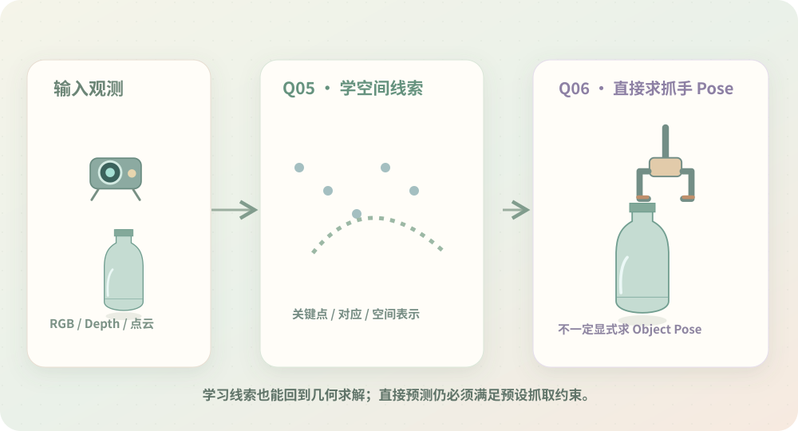

终于有了一条路，
但好像不止这一条。
从目标观测到空间信息，再到 Pose，思路已经比较完整。可当物体变形、几何线索不稳定时，手工约定规则不一定还那么自然。现在有了第一条路，就更想看看它之外还有什么可能。

那些难以手工提取的空间线索，能不能让模型来学？
原本用几何方法计算中心、主轴、表面，或根据参考信息寻找对应。继续研究才发现，学习式方法也可以预测关键点、特征对应、类别级空间参考，甚至直接估计物体位姿。
这带来了一个很有意思的认识：学习方法不一定替代几何；它也可以只负责提供更好的约束。 可以让网络学难以明确手写的视觉规律，再让几何求解继续发挥作用。
与此同时，数据覆盖、形变适应、训练与部署成本，也成了需要认真验证的新条件。
学习式空间线索更像一座桥：既能服务于几何求解，也能为更直接的 Pose 估计提供中间表示。
既然模型可以学习空间约束，我最开始追求的又是夹爪的位置和方向：真的每次都必须先求完整 Object Pose 吗？
可不可以直接求 Grasp Pose？
如果目标是已知刚体，先恢复 Object Pose，再根据预定相对姿态换算到夹爪坐标系，是很清楚的一条路。但如果抓取只依赖局部接触区域与接近方向，未必需要恢复整个物体的规范姿态。
于是出现了局部几何直接构造、2.5D 抓取预测、以及直接生成候选 6DoF Grasp Pose 等思路。它们的输入可能是深度、点云或融合特征，不一定显式经过同样的中间步骤。
不过，这里仍然是 Stage 01：抓取方式与夹爪约束已经约定。 多个候选 Pose 也需要符合这些条件，而碰撞和实际执行可行性仍要额外检查。
完整 Object Pose 并不是获取 Grasp Pose 的唯一中间结果。几何构造、参考位姿与直接预测，是可以并行研究的不同技术路线。
到这里最开始的目的终于更清楚了：我不是在找“最新算法”，而是在根据已知条件选择合适的求解路线。那整个 Stage 01 应该怎样整理成一张地图？
把这一路认识的路摊开看看。
回看每条路需要什么、解决什么、代价在哪里，再看看下一站自然出现了什么问题。